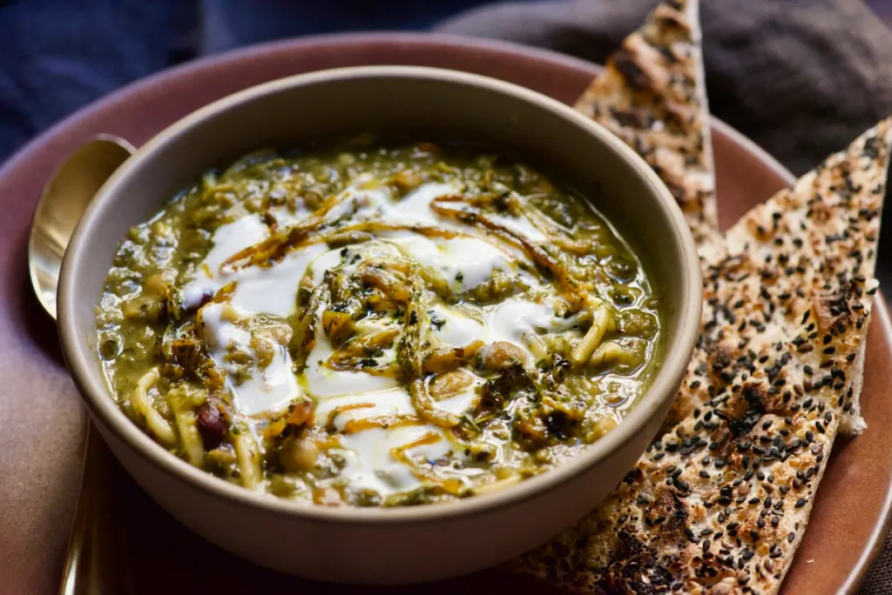
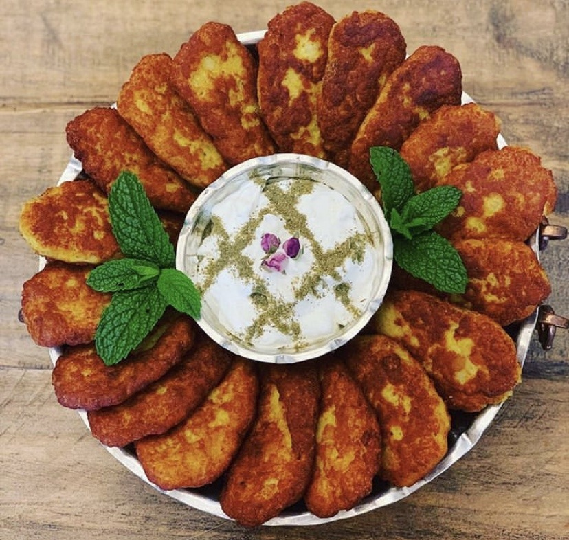

Signature Meals
Idk what to write here yet I will figure it out soon

Ghorme Zabzi
This is a definately a must-have traditional Iraninan food. It is a beef and kidney bean stew loaded with flavors of different fresh green herbs.

Ash Reshteh
This is a classic Persian noodle soup with beans and herbs that is intensely aromatic and perfect for the winter season.

Kookoo Sibzamini
Potato patties are one of the classic picnic bites in Iran. These vegetarian goodies are best for a light dinner or lunch!